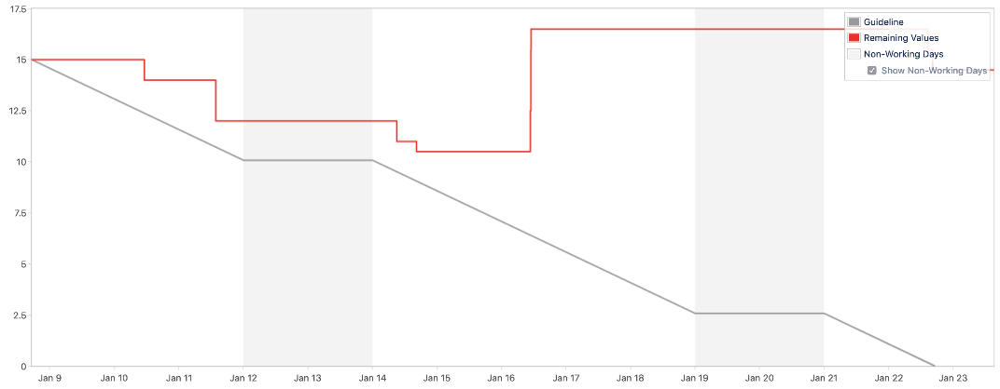

Debugging the Delivery of a Team (2/4)
Debugging the Delivery of a Team (2/4)
An articles series on troubleshooting a team struggling to ship.
Previous episodes
In the previous blog we introduced the problem. We have a team, working with scrum, that is going through the movements but struggling to ship software.
Now we will look into our first troubleshooting iterations. As all the articles in this series, it starts with a graph.
Flat line
This was what our burn down chart looked like. We were flatlining — we were working hard, and yet failing to complete most (any?) of the tasks that we were supposed to do, not delivering value at the end of the sprint. But why?
Taking a look at our process, one issue was standing out: our sprint planning sessions were taking way too long! We tended to address both goal setting and task-estimating in a single session. As a result, planning sessions were gruelling, lasting up to 2-3 hours. After a while, planning fatigue would set in, we would run out of the mental energy required to discuss the tasks in front of us, and end up committing to work we did not fully understand. The result we ended up with was a series of vaguely defined and somewhat decontextualised tasks, and a sprint goal which felt unachievable.
How to we tackle this?
The Woes of Not Having a Backlog
Because of reasons tied to the specifics of our project, having an healthy backlog maintained by the Product Owner was a no-go for us. We had to find a different solution.
After various experiments, we settled on a set-up where the Product Owner, me and the senior engineer in the team would get together early during the current sprint and specify the sprint goal for the next sprint. In the sprint, we would allocate some work to create the next sprint backlog. Something like a Just in Time backlog.
By decoupling the process of setting the sprint goal (the ‘what’) from the work of planning the sprint (the ‘how’) we create the condition for better planning. Our sprint planning ceremony ended up taking much less time and the tasks created through the planning process were fully contextualised.
This landed us to the somewhat healthier delivery pattern that you can see here.

The observant reader will notice that we still ended up not delivering. As a matter of fact, despite being healthier, is anything but healthy!
In the next article we will see why, and how we adapted. Again.
Disclaimer
I know that burndown charts have a bad reputation and I don't want to suggest that they are the be-all end-all of team efficiency. I do think they are a useful metric that can be used to explore how much a team is able to focus and understands its own capacity.
This content is based on a previous article published on October 2, 2019.